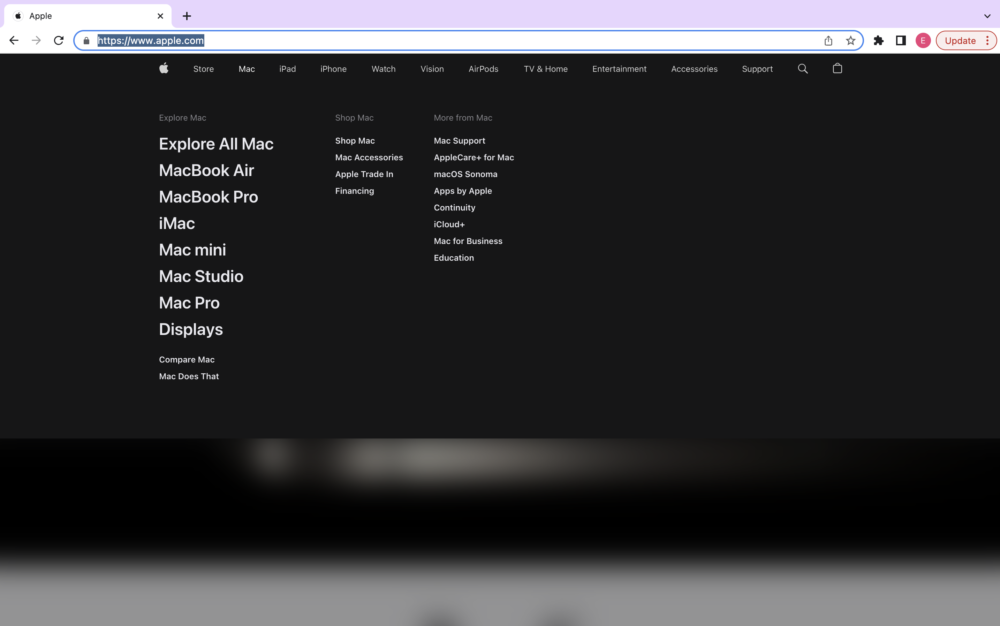
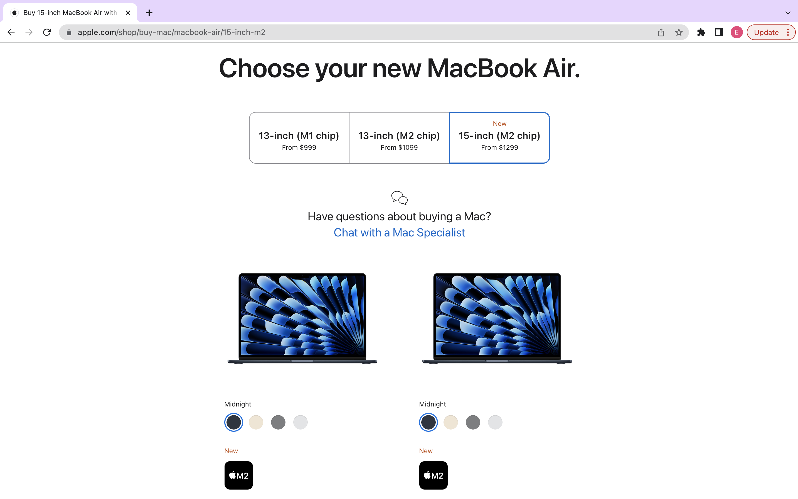
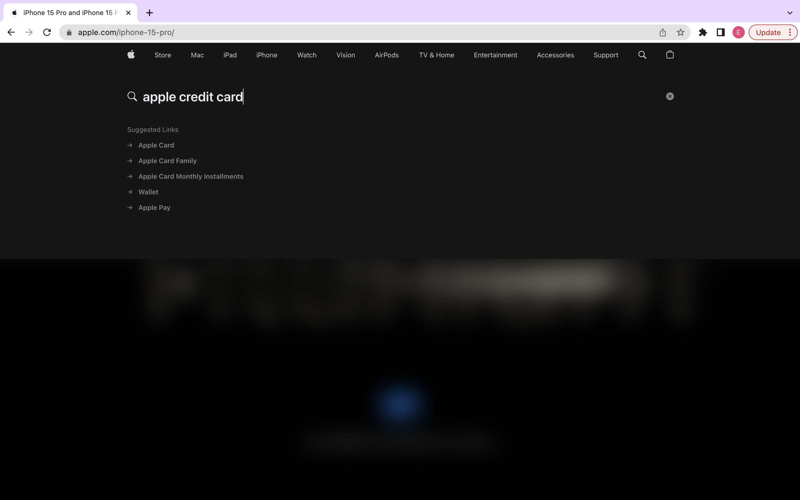
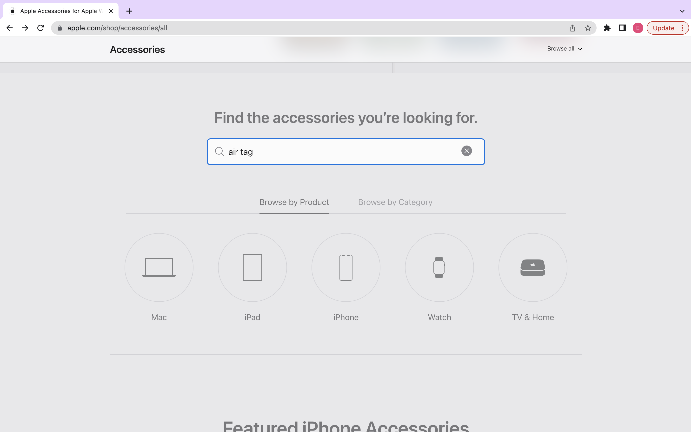
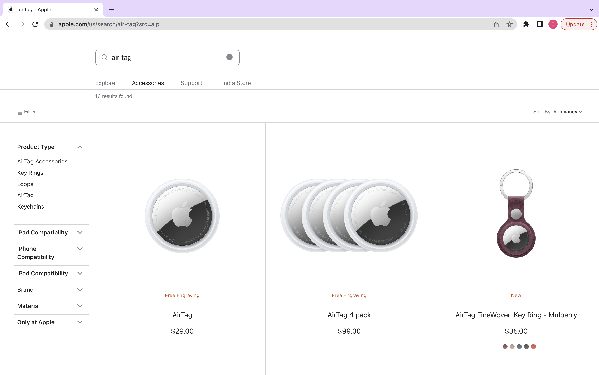
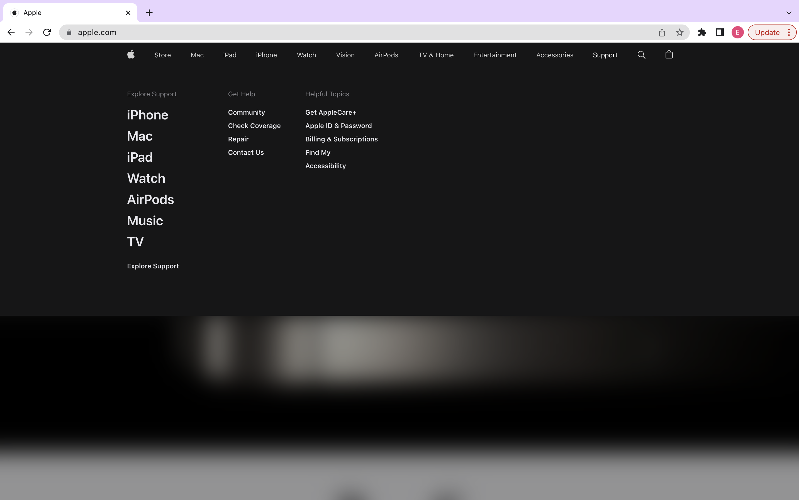
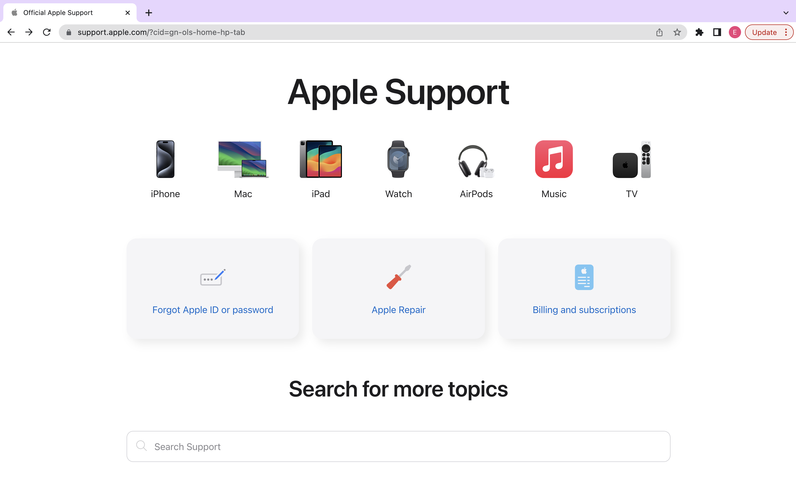
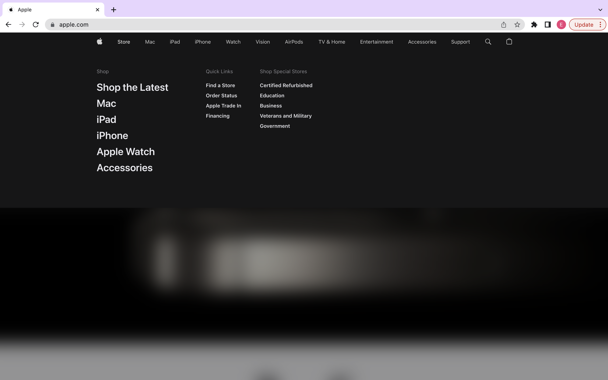
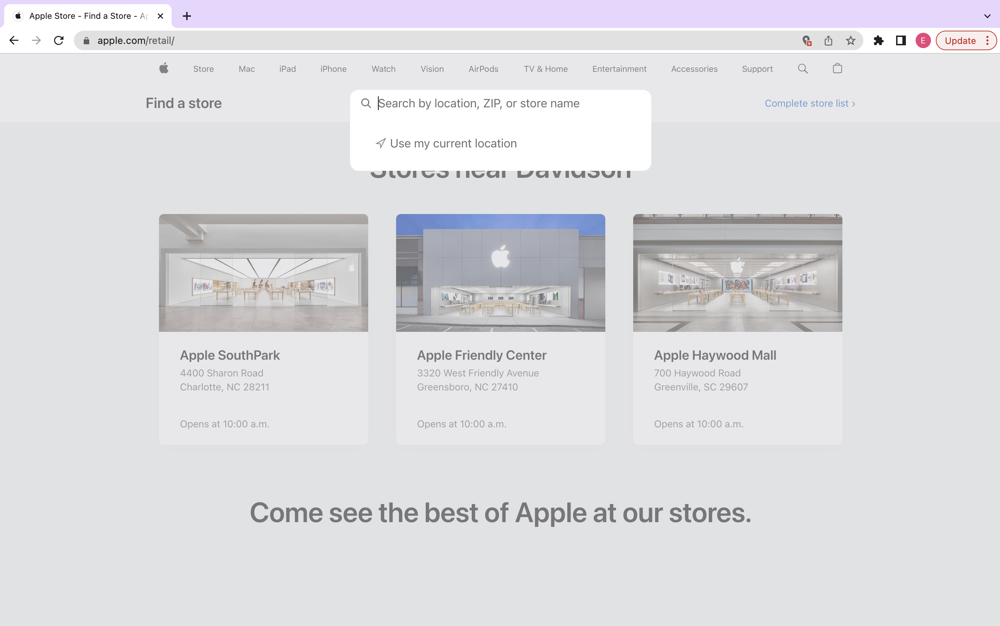

The focus of this usability test was the Apple website. We had a user complete various tasks and used these tasks to determine if the website is user friendly.
This website includes pages for each task with descriptions on each as well as a final page in which you can calculate the SUS score after completing the tasks.
This task took the user some time to figure out. The user began by heading to where the Macbook options are shown on the website. The wording of the task led to confusion as the user was unsure on what was meant by options.
Time Taken:



The user was able to complete this task with no issues. Although there was no specific option in the navigation menu for an Apple Credit card, the user took advantage of the search bar to find information on Apple Credit Cards
Time Taken:
Now that the user has gotten use to the layout of the Apple website, they utilized the search bar to efficiently get to the section to buy Airtags. This task also ended up being the task that took the least amount of time for the user to complete.
Time Taken:




The user was able to complete this task with no errors. The task description itself was straight forward and easy for the user to understand.
Time Taken:
The user was able to complete this task with no errors. The task description itself was straight forward and easy for the user to understand.
Time Taken:


Overall SUS Score: